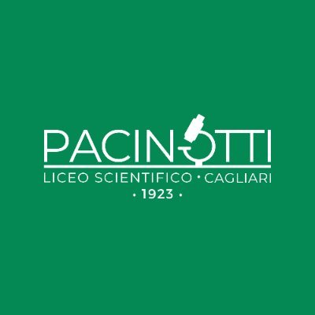

About Me
I'm a passionate computer science student with high interest in Data Science and Machine Learning.
I recently concluded my Bachelor's Degree in Applied Computer Science and Data Analytics at the University of Cagliari.
Currently I'm starting my Master's Degree in Applied Artificial Intelligence and in parallel I got selected for a Research Fellowship in my department.
I will always work to convert my passion into something useful for people and to create a better tomorrow.
Work Experience
Research Intern
Università degli Studi di Cagliari
Oct 2024 - Feb 2025
- Contributed to LLM-based simulation of learner behavior via role-playing techniques, including data collection, performance evaluation, and system design.
- Led development of a multi-agent LLM-powered learning environment to enhance student engagement and learning outcomes.
- Designed pipelines for context-aware retrieval and optimization of raw educational materials for LLM agents.
- Conducted quality assessments with both agentic simulations and real students to validate learning support effectiveness.
Education
BSc in Applied Computer Science and Data Analytics
Università degli Studi di Cagliari
Sep 2022 - Jul 2025
- GPA: 29.73/30
- First graduate of the academic year of the course.
- Co-authored a paper accepted at a peer-reviewed conference.
- Core subjects: Machine Learning, Deep Learning, Big Data, Computational Statistics, Data Structures & Algorithms.

High Scool Diploma
Liceo Scientifico A. Pacinotti
Sep 2017 - Jun 2022
- Final grade: 100/100
- Won a Latin Language translation contest
Projects
Publications
Interests